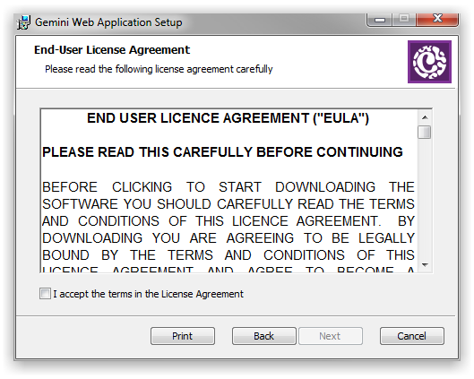
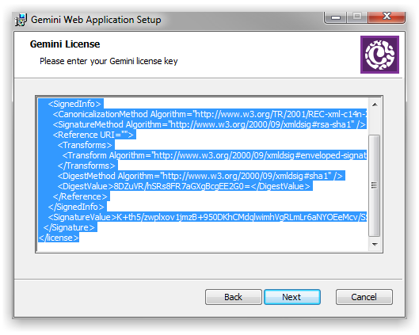
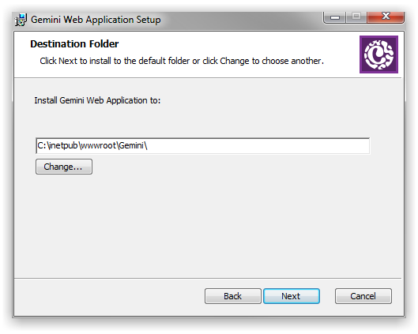
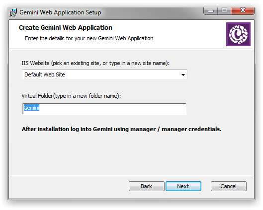
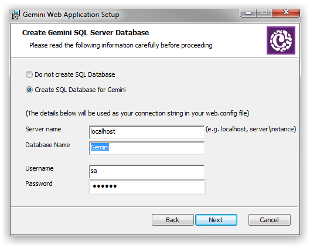
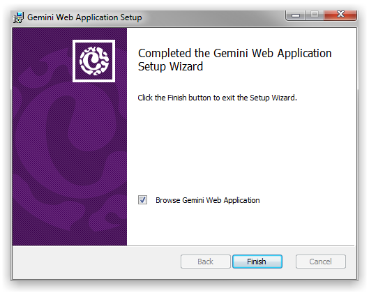
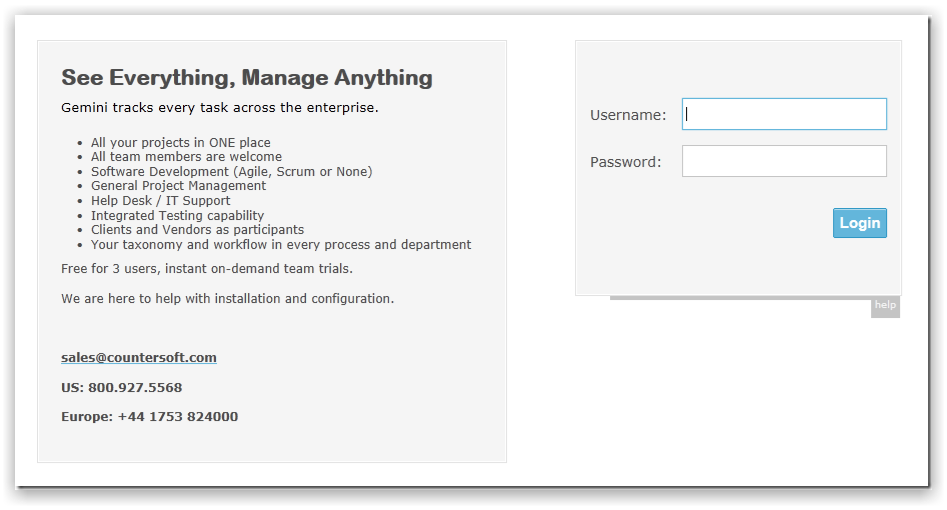

The automated installer will install the Gemini web application to your web server (IIS) and configure a SQL Server database loaded with sample data to get you going.
The following must be present on your Windows Server. You can choose to have your IIS Web Server and SQL Server on the same machine or each running on different machines.
If you cannot confirm or do not understand any of the above items then either contact us or your IT administrator.
Please check you have everything ready for the installation process.
Note Right click on the file then select Properties and click Unblock.

Read and accept the License Agreement should you wish to install Gemini.
Paste in the license key that was provided to you after sign-up.


Usually the default installation path is acceptable, but you can change this path as required.

Select where you want to create the Gemini web application.

Provide credentials to connect to your existing SQL Server instance. Please ensure all credentials are correct by testing beforehand.

Once the installation process completes you will see the above dialog.
After installation you can navigate to the Gemini web application using your browser (e.g. “http://servername/gemini”).

If you see something like the above then Gemini has been installed correctly.
Login Credentials Username is "manager" and password is "manager"